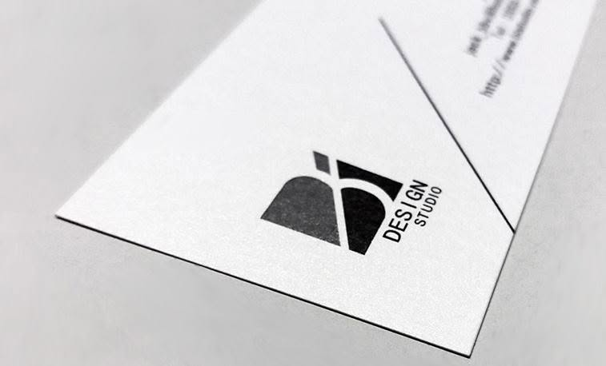
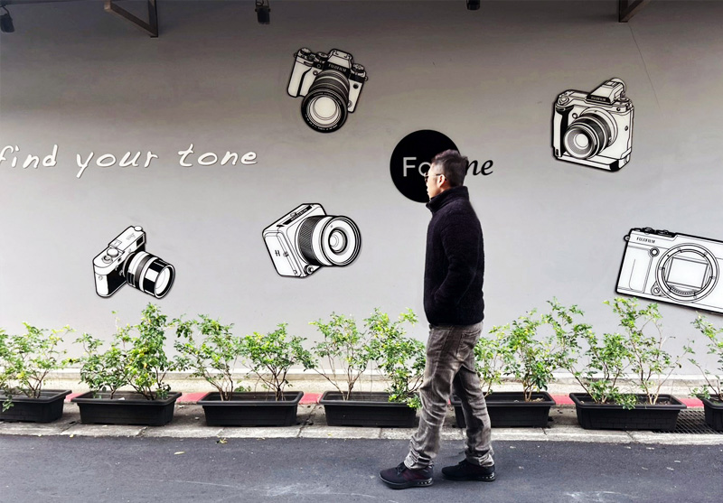

Yes. I’m a Designer !!
設計，源於生活，改變生活。我是 Jack，Bi Design Studio 的設計師，從視覺到前端實作，把網站做得簡潔、清楚、好使用。
WEB ・ FRONT-END ・ GRAPHIC

SERVICES
服務項目
01
網站設計與開發
以 HTML5、CSS3、JavaScript 製作響應式網站，也熟悉 WordPress 架站，以及 Vue、React 前端開發。
02
網站維護
網站改版、內容更新與日常維護，讓網站長期維持穩定與好用。
03
平面商業設計
名片、LOGO、DM 與廣告視覺等商業設計。
04
型錄書籍設計
型錄、手冊與印刷品的版面編排與設計。
ABOUT
設計，是最直接的視覺感動。
生活簡單就好。
我是 Jack，大學外文系畢業，因為熱愛設計，從平面、包裝一路做到網頁與前端。看得懂設計稿，也知道怎麼把它做出來。
PHOTOSHOP ・ ILLUSTRATOR ・ CORELDRAW ・ VS CODE
